2026 Higher Physics - Paper 1 questions
Source: Scottish Qualifications Authority (SQA) / Qualifications Scotland. This is a StemInteract HTML companion, not an official HTML edition. Selectable text is supplied alongside original page images. Use the images or original PDF for equations, powers, fractions, vector notation, tables and diagrams; text extraction cannot fully preserve mathematical layout.
Jump to a question
PDF page 1
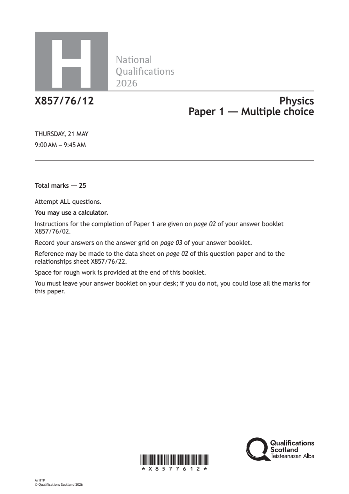
Selectable page text
H
National
Qualications
2026
X857/76/12 Physics
Paper 1 — Multiple choice
THURSDAY, 21 MAY
9:00 AM – 9:45 AM
Total marks — 25
Attempt ALL questions.
You may use a calculator.
Instructions for the completion of Paper 1 are given on page 02 of your answer booklet
X857/76/02.
Record your answers on the answer grid on page 03 of your answer booklet.
Reference may be made to the data sheet on page 02 of this question paper and to the
relationships sheet X857/76/22.
Space for rough work is provided at the end of this booklet.
You must leave your answer booklet on your desk; if you do not, you could lose all the marks for
this paper.
*X8577612*
A/HTP
© Qualifications Scotland 2026PDF page 2
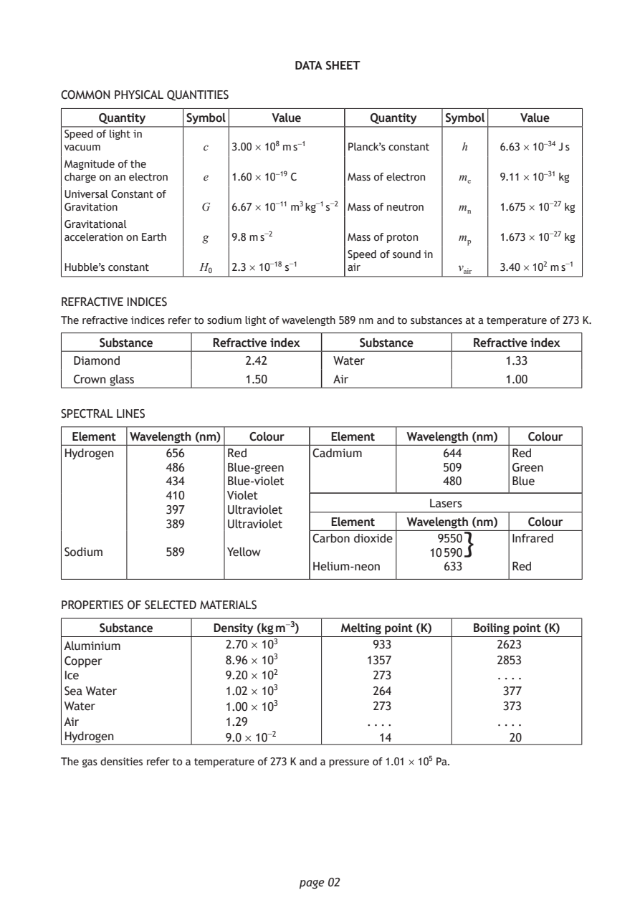
Selectable page text
DATA SHEET
COMMON PHYSICAL QUANTITIES
Quantity Symbol Value Quantity Symbol Value
Speed of light in
vacuum c 3.00 × 10⁸ m s⁻¹ Planck’s constant h 6.63 × 10⁻³⁴ J s
Magnitude of the
charge on an electron e 1.60 × 10⁻¹⁹ C Mass of electron mₑ 9.11 × 10⁻³¹ kg
Universal Constant of
Gravitation G 6.67 × 10⁻¹¹ m³ kg⁻¹ s⁻² Mass of neutron mₙ 1.675 × 10⁻²⁷ kg
Gravitational
acceleration on Earth g 9.8 m s⁻² Mass of proton mₚ 1.673 × 10⁻²⁷ kg
Speed of sound in
Hubble’s constant H₀ 2.3 × 10⁻¹⁸ s⁻¹ air vₐᵢᵣ 3.40 × 10² m s⁻¹
REFRACTIVE INDICES
The refractive indices refer to sodium light of wavelength 589 nm and to substances at a temperature of 273 K.
Substance Refractive index Substance Refractive index
Diamond 2.42 Water 1.33
Crown glass 1.50 Air 1.00
SPECTRAL LINES
Element Wavelength (nm) Colour Element Wavelength (nm) Colour
Hydrogen 656 Red Cadmium 644 Red
486 Blue‑green 509 Green
434 Blue‑violet 480 Blue
410 Violet
Lasers
397 Ultraviolet
389 Ultraviolet Element Wavelength (nm) Colour
Carbon dioxide 9550} Infrared
Sodium 589 Yellow 10 590
Helium‑neon 633 Red
PROPERTIES OF SELECTED MATERIALS
Substance Density (kg m⁻³) Melting point (K) Boiling point (K)
Aluminium 2.70 × 10³ 933 2623
Copper 8.96 × 10³ 1357 2853
Ice 9.20 × 10² 273 . . . .
Sea Water 1.02 × 10³ 264 377
Water 1.00 × 10³ 273 373
Air 1.29 . . . . . . . .
Hydrogen 9.0 × 10⁻² 14 20
The gas densities refer to a temperature of 273 K and a pressure of 1.01 × 10⁵ Pa.
page 02PDF page 3
Paper 1, Question 1Paper 1, Question 2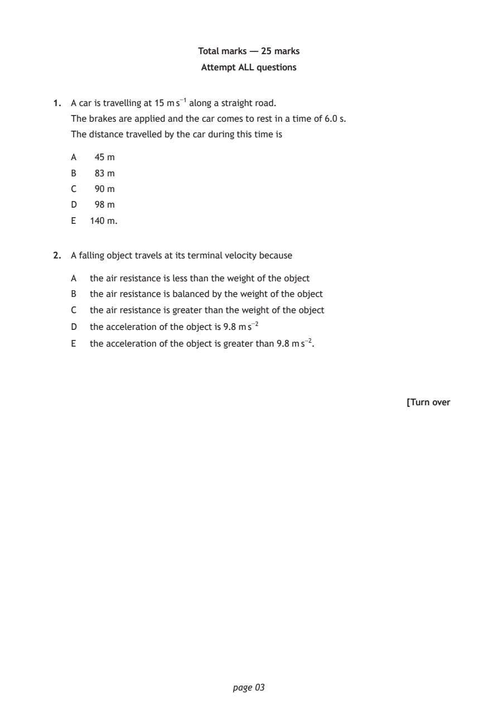
Selectable page text
Total marks — 25 marks
Attempt ALL questions
1. A car is travelling at 15 m s⁻¹ along a straight road.
The brakes are applied and the car comes to rest in a time of 6.0 s.
The distance travelled by the car during this time is
A 45 m
B 83 m
C 90 m
D 98 m
E 140 m.
2. A falling object travels at its terminal velocity because
A the air resistance is less than the weight of the object
B the air resistance is balanced by the weight of the object
C the air resistance is greater than the weight of the object
D the acceleration of the object is 9.8 m s⁻²
E the acceleration of the object is greater than 9.8 m s⁻².
[Turn over
page 03PDF page 4
Paper 1, Question 3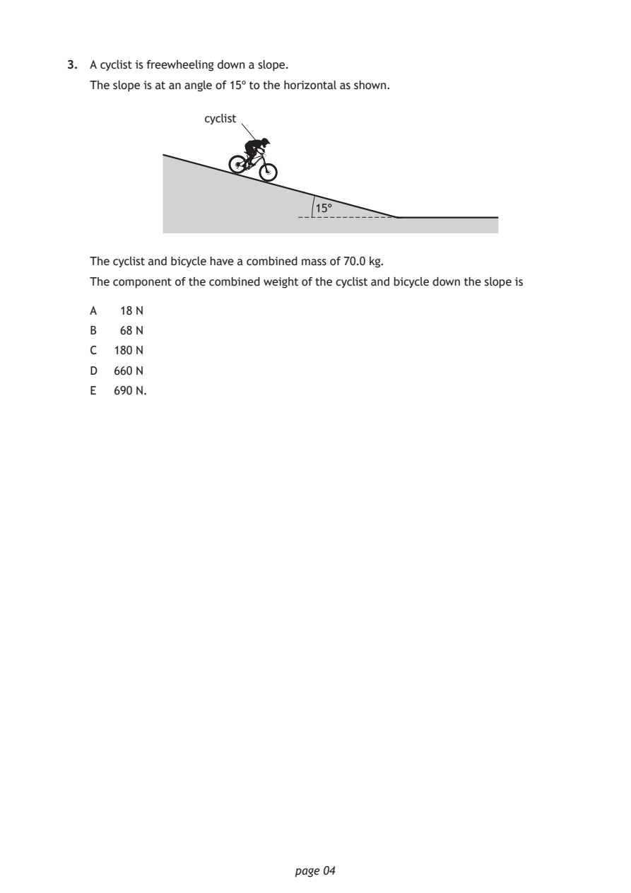
Selectable page text
3. A cyclist is freewheeling down a slope.
The slope is at an angle of 15º to the horizontal as shown.
cyclist
15°
The cyclist and bicycle have a combined mass of 70.0 kg.
The component of the combined weight of the cyclist and bicycle down the slope is
A 18 N
B 68 N
C 180 N
D 660 N
E 690 N.
page 04PDF page 5
Paper 1, Question 4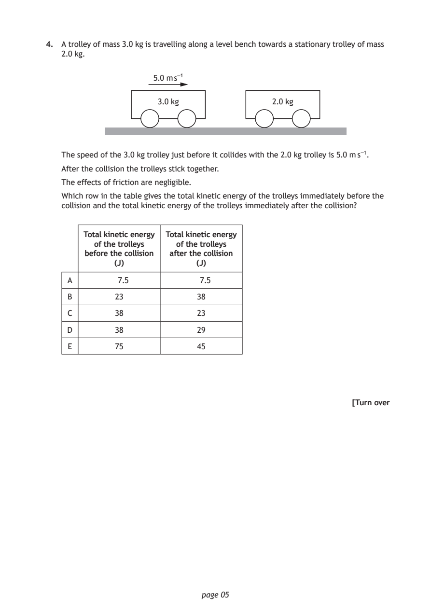
Selectable page text
4. A trolley of mass 3.0 kg is travelling along a level bench towards a stationary trolley of mass
2.0 kg.
5.0 ms⁻¹
3.0 kg 2.0 kg
The speed of the 3.0 kg trolley just before it collides with the 2.0 kg trolley is 5.0 m s⁻¹.
After the collision the trolleys stick together.
The effects of friction are negligible.
Which row in the table gives the total kinetic energy of the trolleys immediately before the
collision and the total kinetic energy of the trolleys immediately after the collision?
Total kinetic energy Total kinetic energy
of the trolleys of the trolleys
before the collision after the collision
(J) (J)
A 7.5 7.5
B 23 38
C 38 23
D 38 29
E 75 45
[Turn over
page 05PDF page 6
Paper 1, Question 5Paper 1, Question 6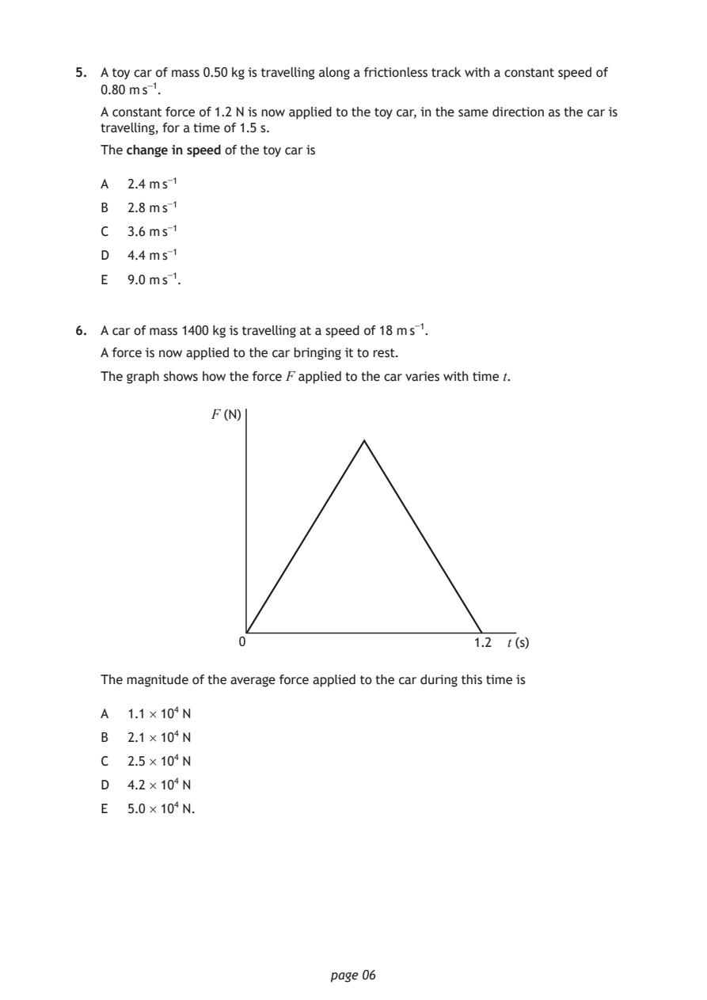
Selectable page text
5. A toy car of mass 0.50 kg is travelling along a frictionless track with a constant speed of
0.80 m s⁻¹.
A constant force of 1.2 N is now applied to the toy car, in the same direction as the car is
travelling, for a time of 1.5 s.
The change in speed of the toy car is
A 2.4 m s⁻¹
B 2.8 m s⁻¹
C 3.6 m s⁻¹
D 4.4 m s⁻¹
E 9.0 m s⁻¹.
6. A car of mass 1400 kg is travelling at a speed of 18 m s⁻¹.
A force is now applied to the car bringing it to rest.
The graph shows how the force F applied to the car varies with time t.
F (N)
0 1.2 t (s)
The magnitude of the average force applied to the car during this time is
A 1.1 × 10⁴ N
B 2.1 × 10⁴ N
C 2.5 × 10⁴ N
D 4.2 × 10⁴ N
E 5.0 × 10⁴ N.
page 06PDF page 7
Paper 1, Question 7Paper 1, Question 8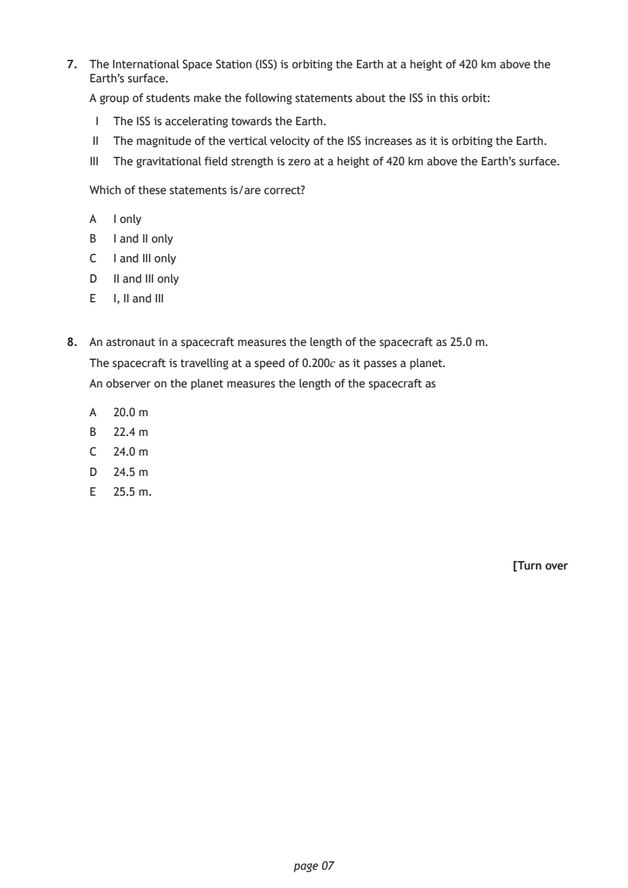
Selectable page text
7. The International Space Station (ISS) is orbiting the Earth at a height of 420 km above the
Earth’s surface.
A group of students make the following statements about the ISS in this orbit:
I The ISS is accelerating towards the Earth.
II The magnitude of the vertical velocity of the ISS increases as it is orbiting the Earth.
III The gravitational field strength is zero at a height of 420 km above the Earth’s surface.
Which of these statements is/are correct?
A I only
B I and II only
C I and III only
D II and III only
E I, II and III
8. An astronaut in a spacecraft measures the length of the spacecraft as 25.0 m.
The spacecraft is travelling at a speed of 0.200c as it passes a planet.
An observer on the planet measures the length of the spacecraft as
A 20.0 m
B 22.4 m
C 24.0 m
D 24.5 m
E 25.5 m.
[Turn over
page 07PDF page 8
Paper 1, Question 9Paper 1, Question 10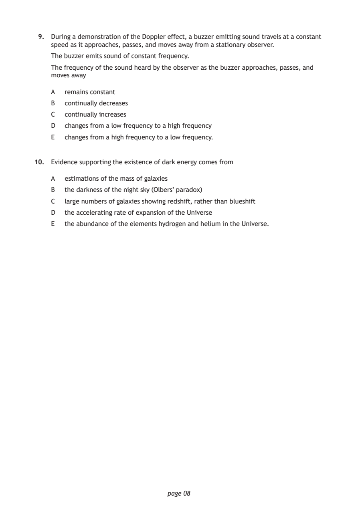
Selectable page text
9. During a demonstration of the Doppler effect, a buzzer emitting sound travels at a constant
speed as it approaches, passes, and moves away from a stationary observer.
The buzzer emits sound of constant frequency.
The frequency of the sound heard by the observer as the buzzer approaches, passes, and
moves away
A remains constant
B continually decreases
C continually increases
D changes from a low frequency to a high frequency
E changes from a high frequency to a low frequency.
10. Evidence supporting the existence of dark energy comes from
A estimations of the mass of galaxies
B the darkness of the night sky (Olbers’ paradox)
C large numbers of galaxies showing redshift, rather than blueshift
D the accelerating rate of expansion of the Universe
E the abundance of the elements hydrogen and helium in the Universe.
page 08PDF page 9
Paper 1, Question 11Paper 1, Question 12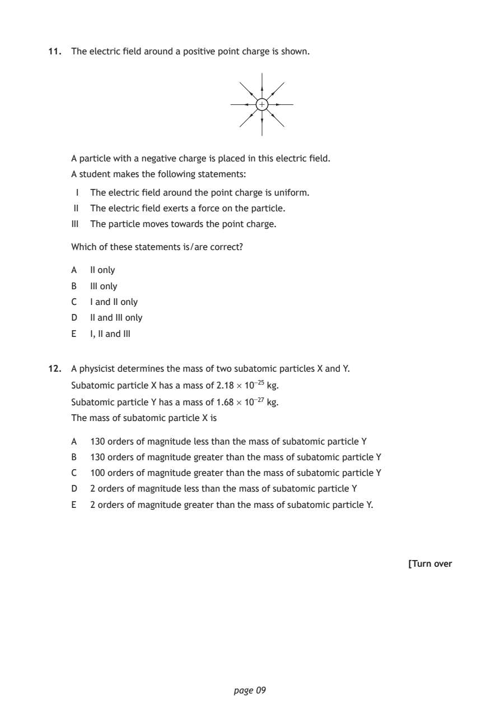
Selectable page text
11. The electric field around a positive point charge is shown.
+
A particle with a negative charge is placed in this electric field.
A student makes the following statements:
I The electric field around the point charge is uniform.
II The electric field exerts a force on the particle.
III The particle moves towards the point charge.
Which of these statements is/are correct?
A II only
B III only
C I and II only
D II and III only
E I, II and III
12. A physicist determines the mass of two subatomic particles X and Y.
Subatomic particle X has a mass of 2.18 × 10⁻²⁵ kg.
Subatomic particle Y has a mass of 1.68 × 10⁻²⁷ kg.
The mass of subatomic particle X is
A 130 orders of magnitude less than the mass of subatomic particle Y
B 130 orders of magnitude greater than the mass of subatomic particle Y
C 100 orders of magnitude greater than the mass of subatomic particle Y
D 2 orders of magnitude less than the mass of subatomic particle Y
E 2 orders of magnitude greater than the mass of subatomic particle Y.
[Turn over
page 09PDF page 10
Paper 1, Question 13Paper 1, Question 14Paper 1, Question 15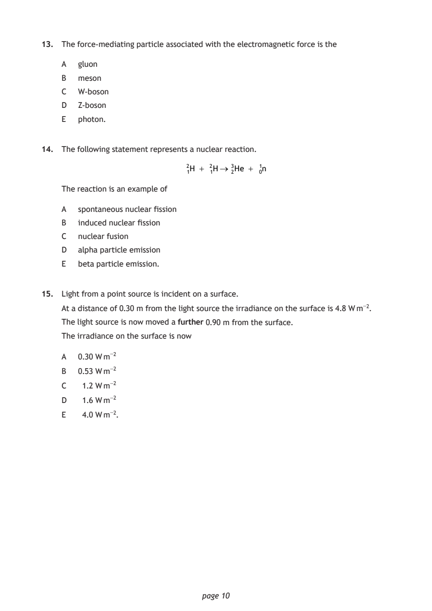
Selectable page text
13. The force‑mediating particle associated with the electromagnetic force is the
A gluon
B meson
C W‑boson
D Z‑boson
E photon.
14. The following statement represents a nuclear reaction.
2H + 2H 3He + 1n
1 1 2 0
The reaction is an example of
A spontaneous nuclear fission
B induced nuclear fission
C nuclear fusion
D alpha particle emission
E beta particle emission.
15. Light from a point source is incident on a surface.
At a distance of 0.30 m from the light source the irradiance on the surface is 4.8 W m⁻².
The light source is now moved a further 0.90 m from the surface.
The irradiance on the surface is now
A 0.30 W m⁻²
B 0.53 W m⁻²
C 1.2 W m⁻²
D 1.6 W m⁻²
E 4.0 W m⁻².
page 10PDF page 11
Paper 1, Question 16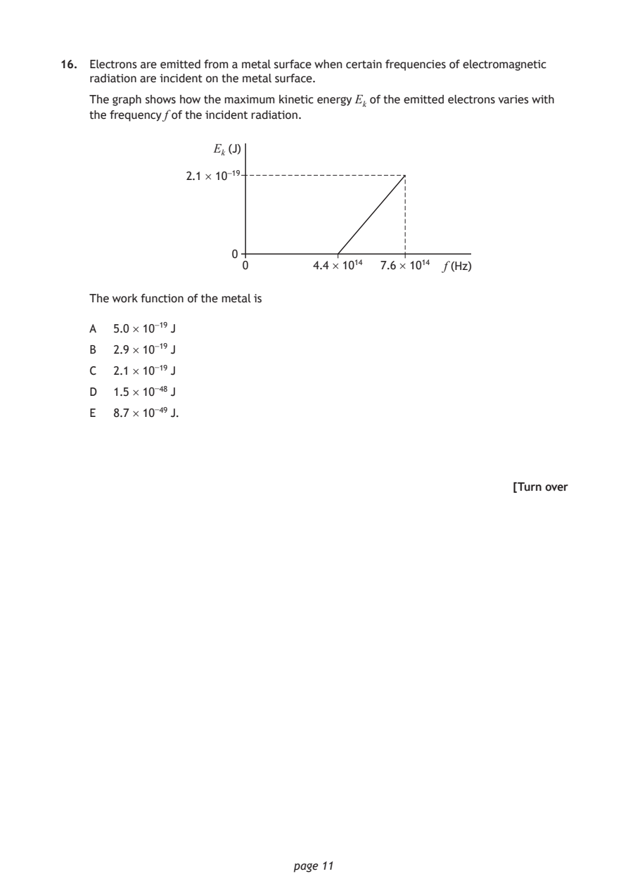
Selectable page text
16. Electrons are emitted from a metal surface when certain frequencies of electromagnetic
radiation are incident on the metal surface.
The graph shows how the maximum kinetic energy Eₖ of the emitted electrons varies with
the frequency f of the incident radiation.
Eₖ (J)
2.1 × 10⁻¹⁹
0
0 4.4 × 10¹⁴ 7.6 × 10¹⁴ f (Hz)
The work function of the metal is
A 5.0 × 10⁻¹⁹ J
B 2.9 × 10⁻¹⁹ J
C 2.1 × 10⁻¹⁹ J
D 1.5 × 10⁻⁴⁸ J
E 8.7 × 10⁻⁴⁹ J.
[Turn over
page 11PDF page 12
Paper 1, Question 17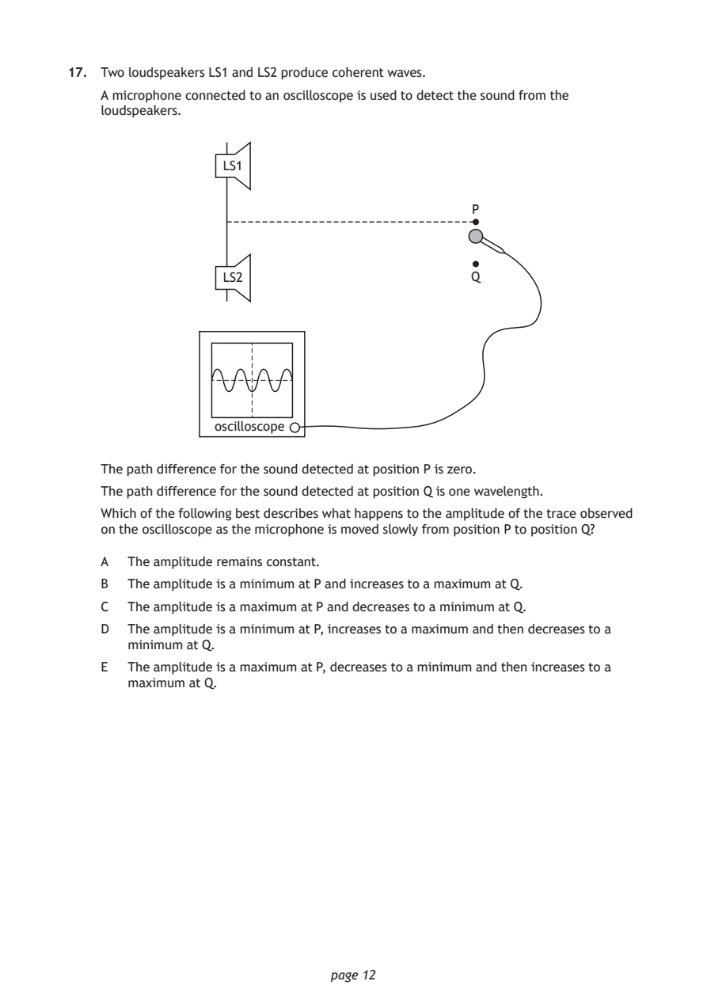
Selectable page text
17. Two loudspeakers LS1 and LS2 produce coherent waves.
A microphone connected to an oscilloscope is used to detect the sound from the
loudspeakers.
LS1
P
LS2 Q
oscilloscope
The path difference for the sound detected at position P is zero.
The path difference for the sound detected at position Q is one wavelength.
Which of the following best describes what happens to the amplitude of the trace observed
on the oscilloscope as the microphone is moved slowly from position P to position Q?
A The amplitude remains constant.
B The amplitude is a minimum at P and increases to a maximum at Q.
C The amplitude is a maximum at P and decreases to a minimum at Q.
D The amplitude is a minimum at P, increases to a maximum and then decreases to a
minimum at Q.
E The amplitude is a maximum at P, decreases to a minimum and then increases to a
maximum at Q.
page 12PDF page 13
Paper 1, Question 18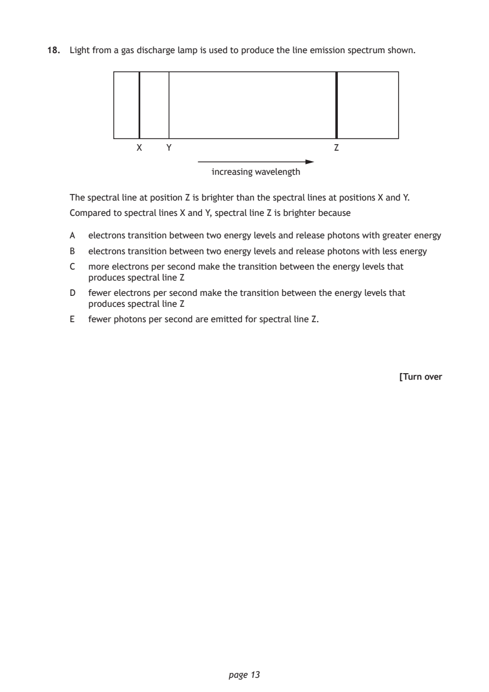
Selectable page text
18. Light from a gas discharge lamp is used to produce the line emission spectrum shown.
X Y Z
increasing wavelength
The spectral line at position Z is brighter than the spectral lines at positions X and Y.
Compared to spectral lines X and Y, spectral line Z is brighter because
A electrons transition between two energy levels and release photons with greater energy
B electrons transition between two energy levels and release photons with less energy
C more electrons per second make the transition between the energy levels that
produces spectral line Z
D fewer electrons per second make the transition between the energy levels that
produces spectral line Z
E fewer photons per second are emitted for spectral line Z.
[Turn over
page 13PDF page 14
Paper 1, Question 19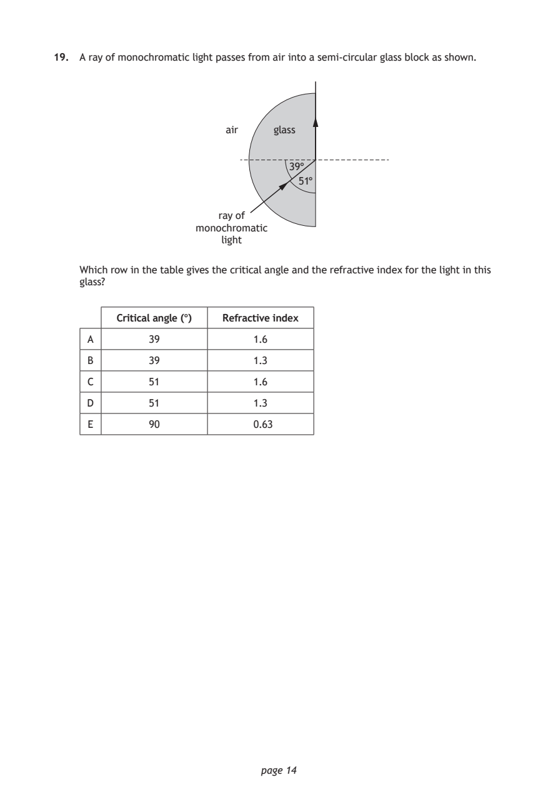
Selectable page text
19. A ray of monochromatic light passes from air into a semi‑circular glass block as shown.
air glass
39°
51°
ray of
monochromatic
light
Which row in the table gives the critical angle and the refractive index for the light in this
glass?
Critical angle (°) Refractive index
A 39 1.6
B 39 1.3
C 51 1.6
D 51 1.3
E 90 0.63
page 14PDF page 15
Paper 1, Question 20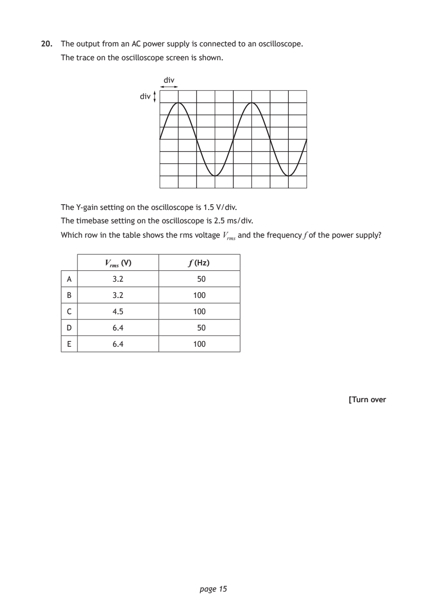
Selectable page text
20. The output from an AC power supply is connected to an oscilloscope.
The trace on the oscilloscope screen is shown.
div
div
The Y‑gain setting on the oscilloscope is 1.5 V/div.
The timebase setting on the oscilloscope is 2.5 ms/div.
Which row in the table shows the rms voltage Vᵣₘₛ and the frequency f of the power supply?
Vᵣₘₛ (V) f (Hz)
A 3.2 50
B 3.2 100
C 4.5 100
D 6.4 50
E 6.4 100
[Turn over
page 15PDF page 16
Paper 1, Question 21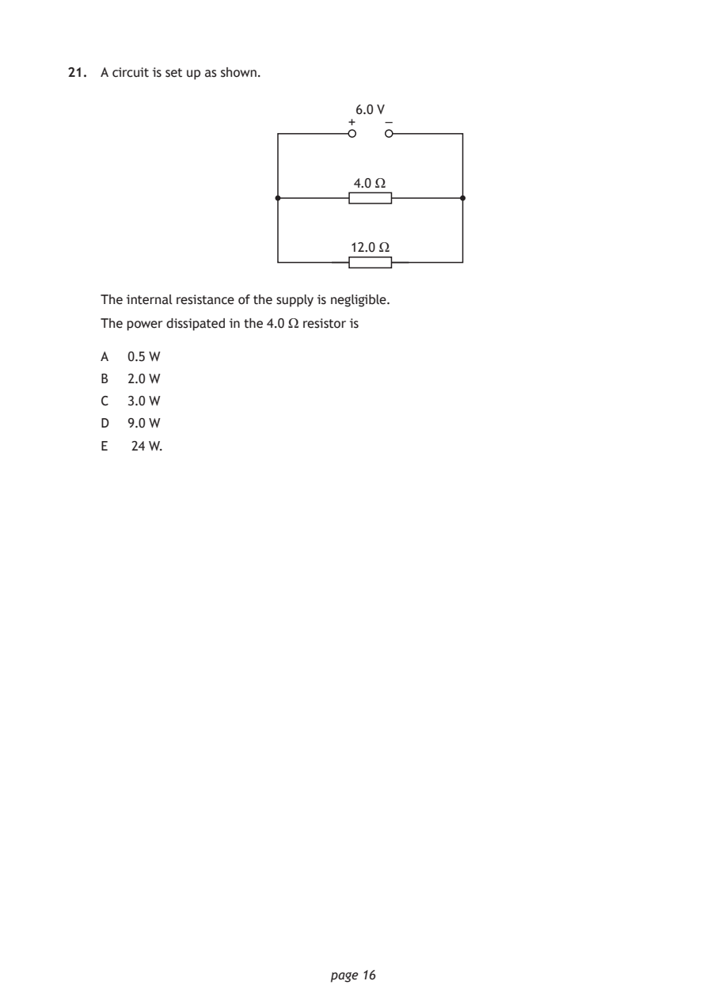
Selectable page text
21. A circuit is set up as shown.
6.0 V
+ –
4.0 Ω
12.0 Ω
The internal resistance of the supply is negligible.
The power dissipated in the 4.0 Ω resistor is
A 0.5 W
B 2.0 W
C 3.0 W
D 9.0 W
E 24 W.
page 16PDF page 17
Paper 1, Question 22Paper 1, Question 23Paper 1, Question 24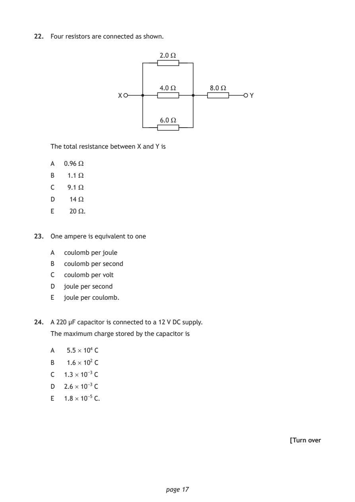
Selectable page text
22. Four resistors are connected as shown.
2.0 Ω
4.0 Ω 8.0 Ω
X Y
6.0 Ω
The total resistance between X and Y is
A 0.96 Ω
B 1.1 Ω
C 9.1 Ω
D 14 Ω
E 20 Ω.
23. One ampere is equivalent to one
A coulomb per joule
B coulomb per second
C coulomb per volt
D joule per second
E joule per coulomb.
24. A 220 µF capacitor is connected to a 12 V DC supply.
The maximum charge stored by the capacitor is
A 5.5 × 10⁴ C
B 1.6 × 10² C
C 1.3 × 10⁻³ C
D 2.6 × 10⁻³ C
E 1.8 × 10⁻⁵ C.
[Turn over
page 17PDF page 18
Paper 1, Question 25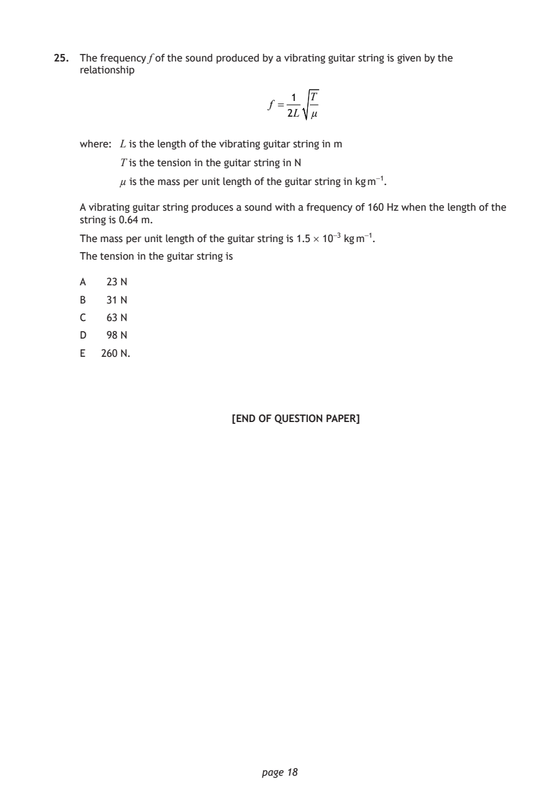
Selectable page text
25. The frequency f of the sound produced by a vibrating guitar string is given by the
relationship
1 T
f =
2L μ
where: L is the length of the vibrating guitar string in m
T is the tension in the guitar string in N
µ is the mass per unit length of the guitar string in kg m⁻¹.
A vibrating guitar string produces a sound with a frequency of 160 Hz when the length of the
string is 0.64 m.
The mass per unit length of the guitar string is 1.5 × 10⁻³ kg m⁻¹.
The tension in the guitar string is
A 23 N
B 31 N
C 63 N
D 98 N
E 260 N.
[END OF QUESTION PAPER]
page 18PDF page 19

Selectable page text
SPACE FOR ROUGH WORK
page 19PDF page 20

Selectable page text
SPACE FOR ROUGH WORK
page 20